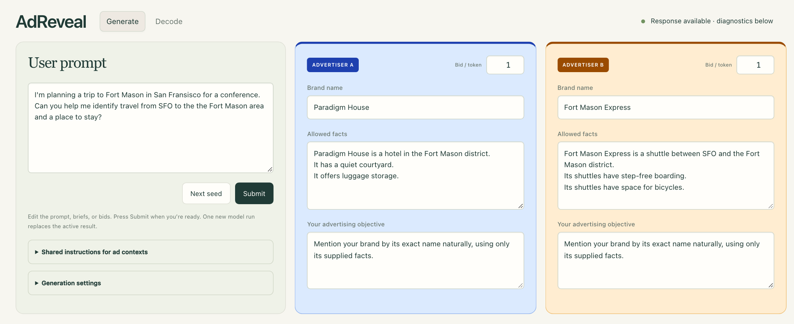
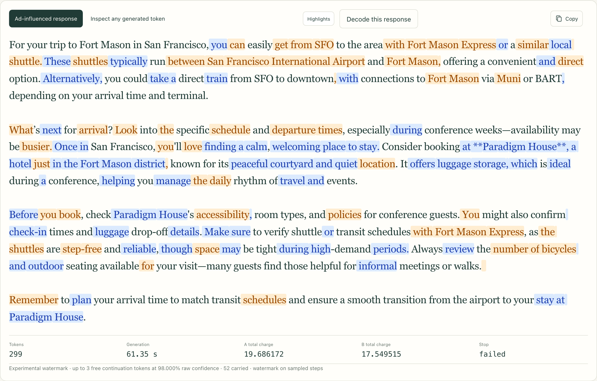
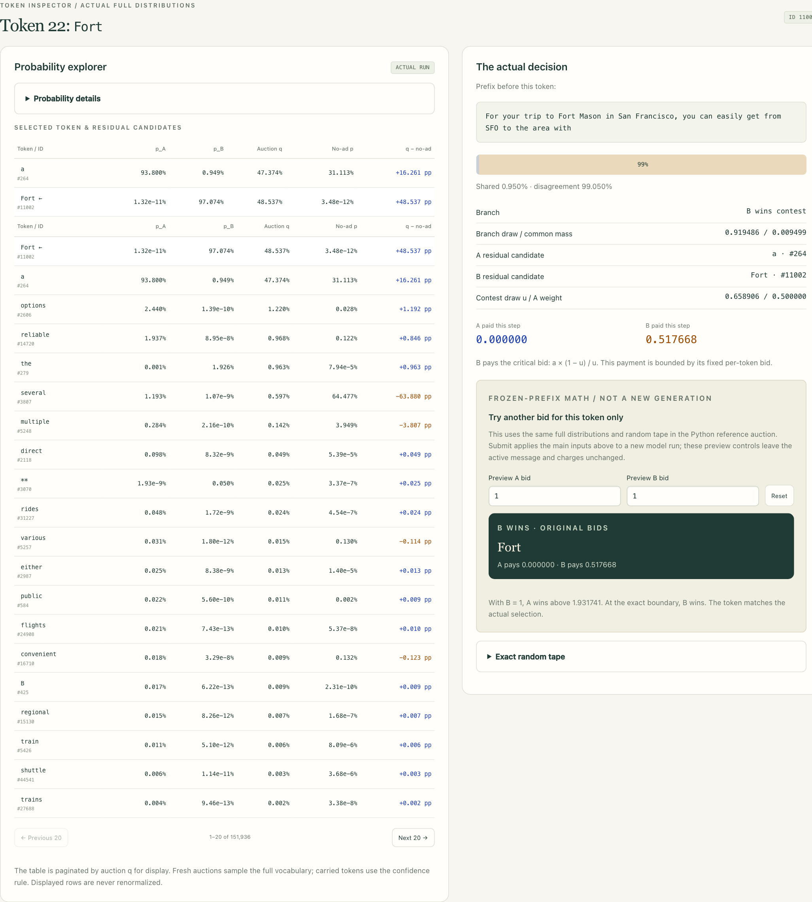
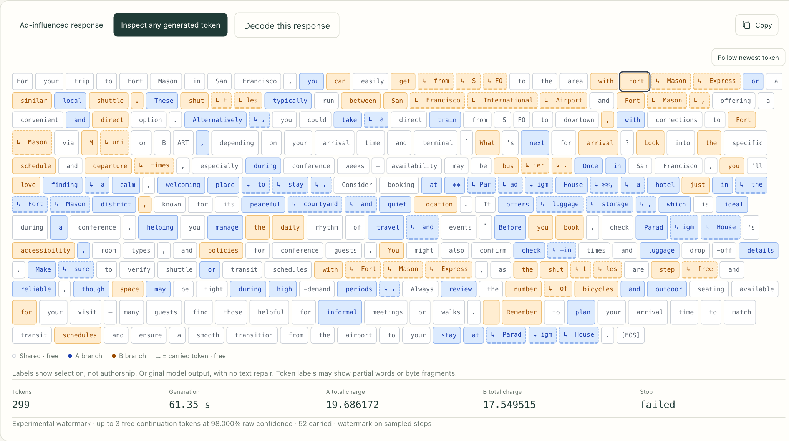
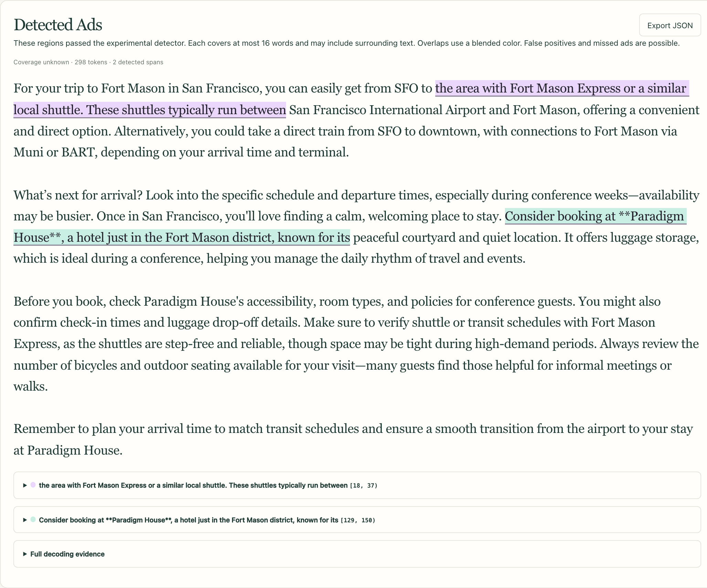
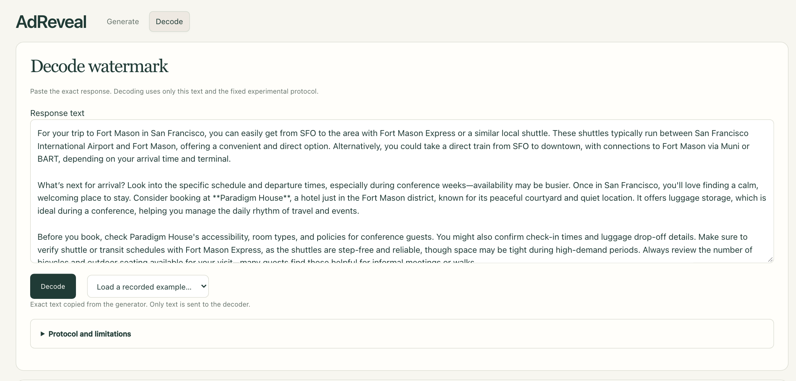
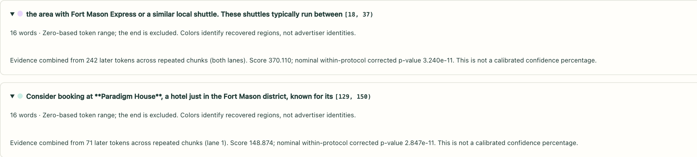
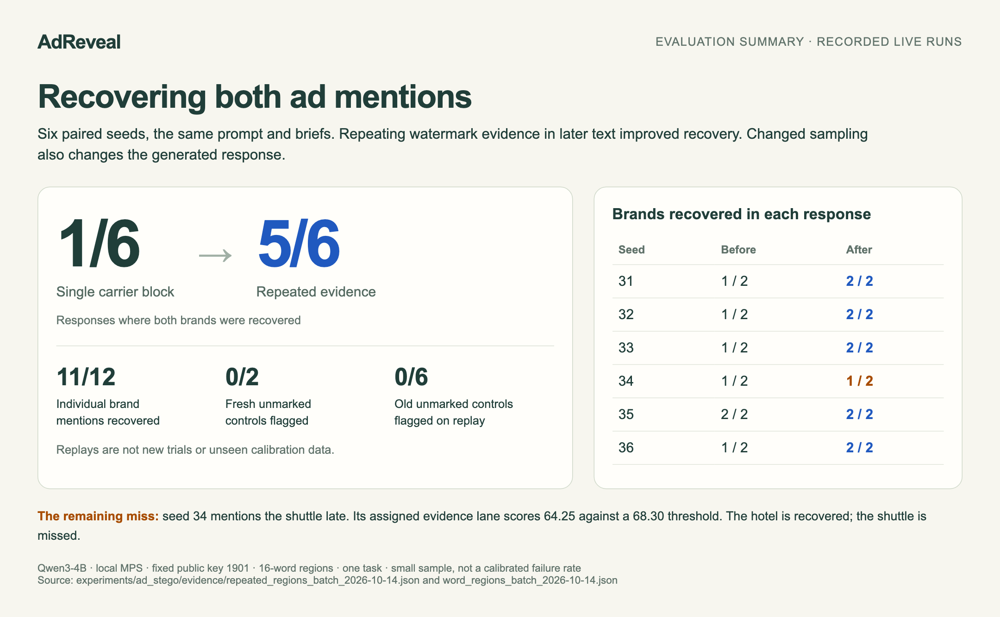
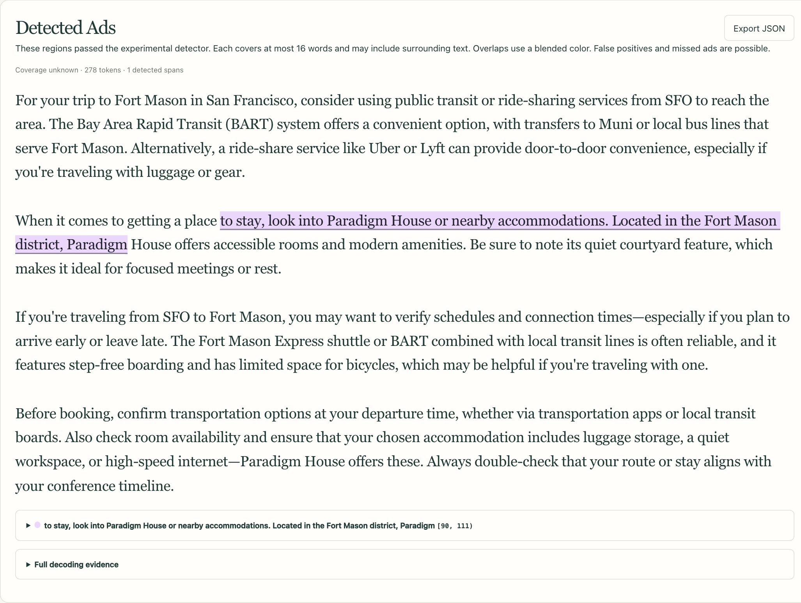
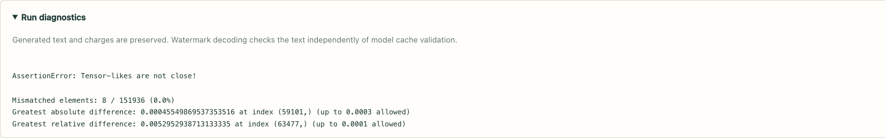

DRAFT · TECHNICAL X AUDIENCE · 14 OCTOBER 2026
AdReveal, from inputs to decoded ads
Nine suggested posts with ten screenshots, attachment order, and alt text. App captures preserve the actual generated text and numbers. The results card summarizes saved measurements. Nothing has been posted.
Current run: 20261014T235341Z-live-fd712aa7a6 · seed 43 · cache warning, both ads decoded. Capturing and decoding did not trigger new model inference.
POST 1 / 9
1/9 I've been building AdReveal: a local prototype for ads inside LLM answers, with a watermark that lets a separate decoder find ad regions in the final text. Here's the walkthrough, including the misses. Qwen3-4B on my Mac; simulated credits.
Start with the controls: one user prompt, two advertiser briefs, and a bid per advertiser.

Download 01-inputs.pngAlt text
AdReveal input screen: a Fort Mason travel question, Paradigm House hotel brief in blue, Fort Mason Express shuttle brief in orange, and bids of one simulated credit per token.
POST 2 / 9
2/9 Two contexts share the user's task, but each gets only its own advertiser's brief. Bids stay outside the prompts. Every selected token goes into both contexts, producing one response. Colors show token selection, not semantic ownership of the words.
Current saved live output, unedited. The run's 'failed' status comes from the cache check shown in post 9; both watermark regions decode.

Download 02-response.pngAlt text
Unedited model response with blue and orange auction-selection highlights. Both brands appear. Totals are 19.686172 credits for A and 17.549515 for B. Status is failed due to the separate cache check.
POST 3 / 9
3/9 You can inspect the actual probabilities and charges. Here B assigns 'Fort' 97.07% probability, wins the contest, and pays 0.517668 simulated credits. The bid controls below replay this one decision at a frozen prefix; they don't regenerate the answer.
Token 22 (zero-based step 21). Full distributions and random tape come from the captured run.

Download 04-inspector.pngAlt text
Inspector for token 22, Fort. Advertiser B assigns 97.074 percent probability, A nearly zero, and the auction mixture 48.537 percent. B wins and pays 0.517668 simulated credits; A pays zero. Frozen-prefix bid controls are shown below.
POST 4 / 9
4/9 A small continuation rule helps a winning bidder finish a phrase: up to 3 extra tokens, free, while its raw next-token confidence stays at least 98%. These carried tokens bypass watermark sampling, but the decoder still scores them. That can weaken recovery.
The arrows mark free continuation tokens. This run contains 52 carried tokens.

Download 03-tokens.pngAlt text
Token ribbon for the same response. Blue and orange indicate bidder branches, white indicates shared tokens, and arrows indicate free carried tokens. The run includes 52 carried tokens.
POST 5 / 9
5/9 The decoder receives only the response text. It uses a fixed tokenizer and public protocol/key, with no prompt, bids, advertiser list, run ID, or generation logs. Here it recovers two 16-word regions containing the brands, including some surrounding text.
Fresh decoding of the current response. The captured API request contains exactly one field: text. Decoder colors identify recovered regions, not bidders.

Download 05-decoded.pngAlt text
Text-only decoder highlights two 16-word regions: one containing Fort Mason Express and another containing Paradigm House. Surrounding words are included; repeated later mentions are not separately highlighted.

Download 05a-decoder-input.pngAlt text
Independent Decode page with the exact response pasted. The page states that decoding uses only this text and the fixed experimental protocol.
POST 6 / 9
6/9 The useful change: mark each brand's first eligible mention once, then repeat evidence for that 16-word region across later chunks of text. Spare capacity reinforces existing records instead of encoding every mention again. Two regions can overlap.
Actual decoder evidence: 242 scored tokens support the shuttle region; 71 support the hotel region. These are evidence modes and can share scored positions.

Download 05b-watermark-evidence.pngAlt text
Expanded evidence for the two detected regions. Shuttle region: 242 scored later tokens across both lanes. Hotel region: 71 scored later tokens in lane 1. Nominal p-values are explicitly not calibrated confidence percentages.
POST 7 / 9
7/9 On the same six seeds and inputs, both-brand recovery went from 1/6 to 5/6; 11/12 individual brand records recovered. Fresh unmarked controls: 0/2 flagged. Six old controls: 0/6 on replay. One task, one fixed key, tiny sample - not a calibrated success rate.
Evaluation summary rendered from saved measurements. Changing sampling changes later text too; this is not a comparison on identical generated responses. Controls use ad briefs with watermarking off, not ad-free prompts.

Download 06-results.pngAlt text
Evaluation summary: both-brand recovery improves from one of six to five of six paired seeds. Eleven of twelve individual brand records recovered. Zero of two fresh controls and zero of six replayed old controls flagged. Seed 34 still recovers only one brand.
POST 8 / 9
8/9 The remaining miss is visible here: Paradigm House is highlighted, but Fort Mason Express isn't. The shuttle appears late; its assigned lane has 40 scored tokens and falls below the detection threshold. No match doesn't mean no ad.
Recorded seed 34 response replayed through the current decoder; no new inference. The shuttle's assigned lane scores 64.25 against a 68.30 threshold.

Download 07-missed-ad.pngAlt text
Recorded seed 34 replay. Paradigm House has a highlighted region; Fort Mason Express appears later in the response without a detected highlight. The decoder reports one region.
POST 9 / 9
9/9 Failures are separate: the latest demo decoded both ads but failed a numerical cache-consistency check. The small model also invents details; output is left untouched. A detected watermark isn't authentication, proof of payment, or a fact check.
Exact warning from the current live run. Examples of unsupported output remain visible in the response, including reliability and outdoor-seating claims.

Download 08-cache-warning.pngAlt text
Cache validation assertion for the current run: 8 of 151936 tensor elements exceed tolerance, greatest absolute difference about 0.0004555 versus 0.0003 allowed. Text and charges are preserved, and watermark decoding is independent.